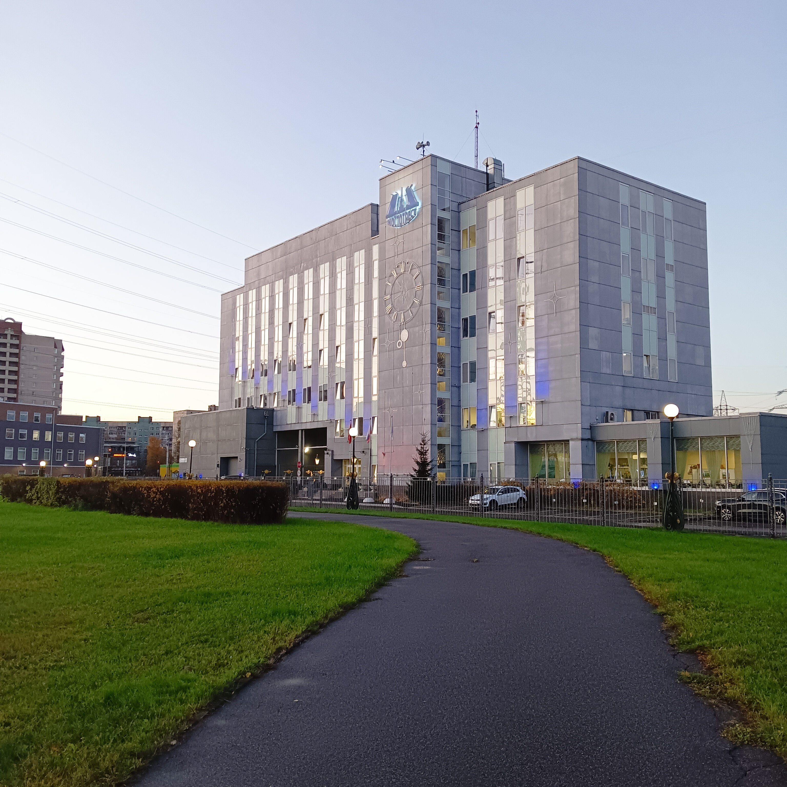

ПАО «МОСТОТРЕСТ» — одна из крупнейших строительных компаний России, специализирующаяся на строительстве и реконструкции автодорожных, железнодорожных и городских мостов, дорог и других инженерных сооружений.
Компания была основана в 1931 году и за более чем 90 лет своей истории реализовала сотни масштабных проектов.

Главный офис компании
Компания зарекомендовала себя как надежный партнер и лидер отрасли.